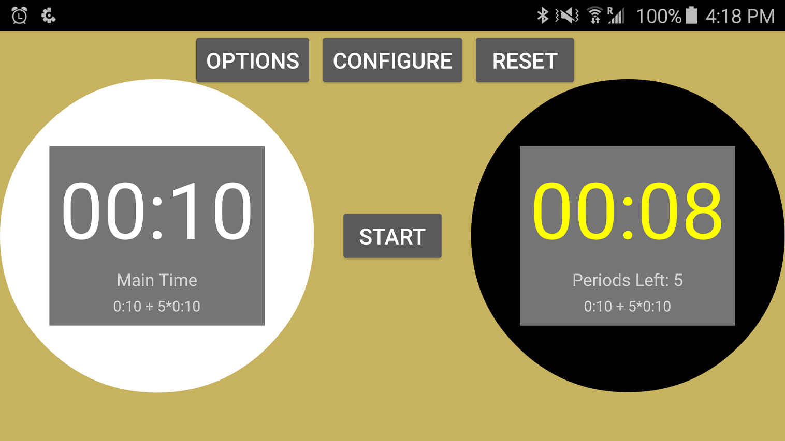
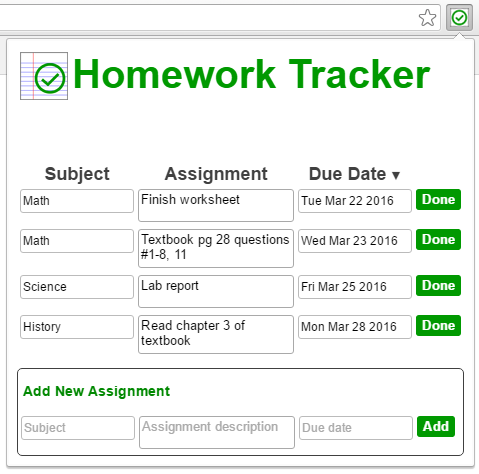

Go Game Clock
AndroidA niche clock app for keeping track of player times in the board game Go.
The app has support for complicated "byoyomi" time controls that are common in Go but which other game clock apps (usually tailored for chess) do not support.
Currently with 800+ downloads and a 4.5-star rating on Google Play.

Homework Tracker
JavaScript, HTML, CSSA Google Chrome popup extension for keeping track of homework items and deadlines.
The extension is designed to be more user-friendly, more responsive, and less memory-intensive than similar free apps on the market.
Currently with 2800+ weekly users and a 5-star rating on the Chrome Web Store.


Contributions to Other Projects
- Remind: features and fixes for various open-source Go packages and Ruby gems, including pkg, collective, and formatted-metrics
- Manifold (fourth-year design project): a system description language with the ease-of-use of a high-level functional programming language. My group is currently expanding Manifold so it can be used to formally describe and verify microfluidic circuits.
A complete and up-to-date account of my public code contributions can be found at my GitHub page.